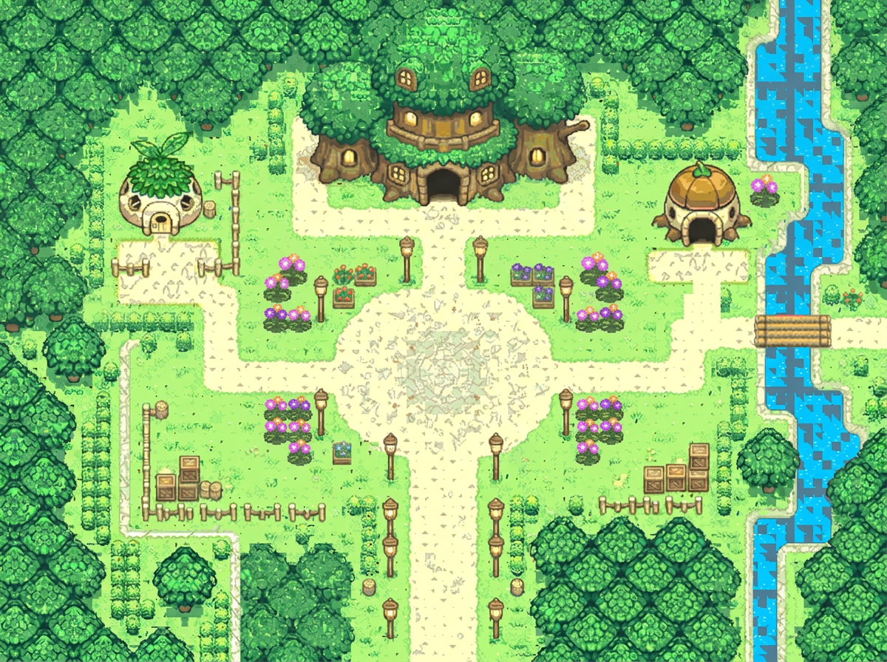

ZGT3 — Village arboricole de guilde
Concept généré avec le générateur d’image, avec référence florale Halcyon/Palikadude.

Illustration conceptuelle statique (1200×896), pas une carte PMDO importable. ZGT1 et ZGT2 sont conservées séparément.